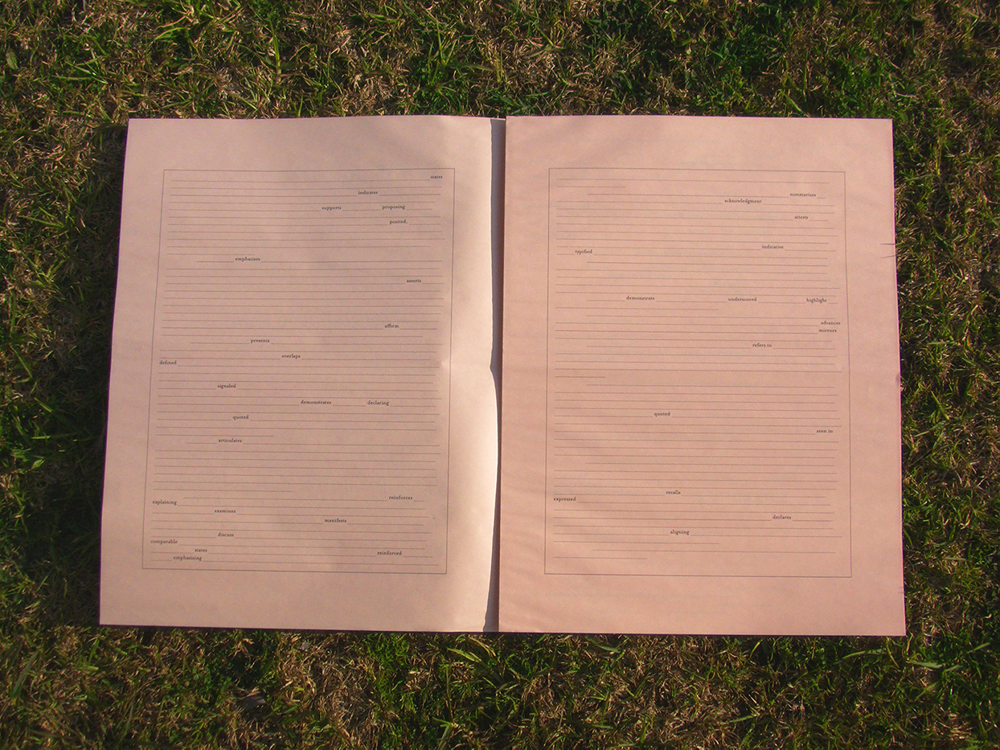
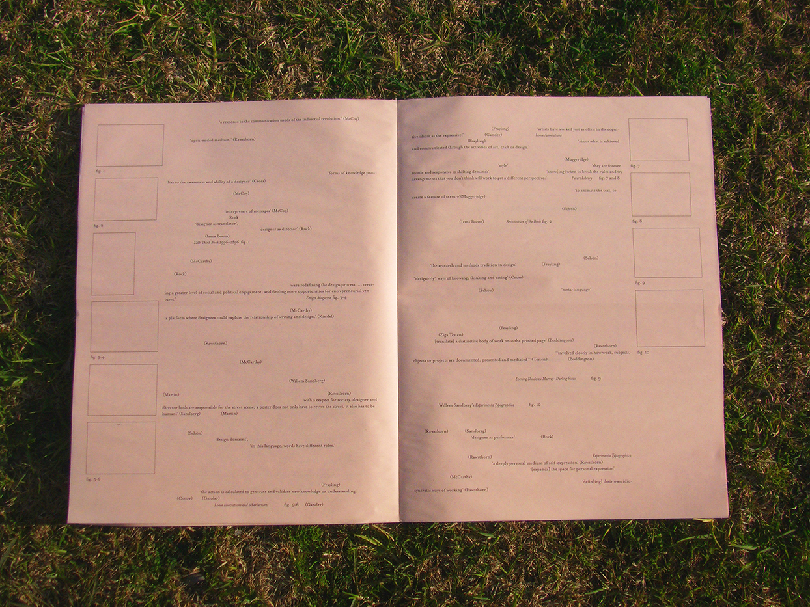
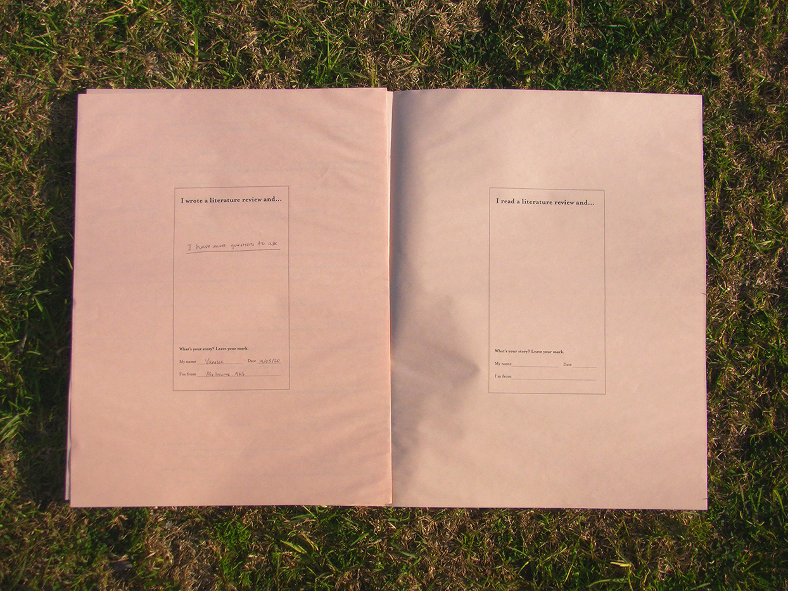
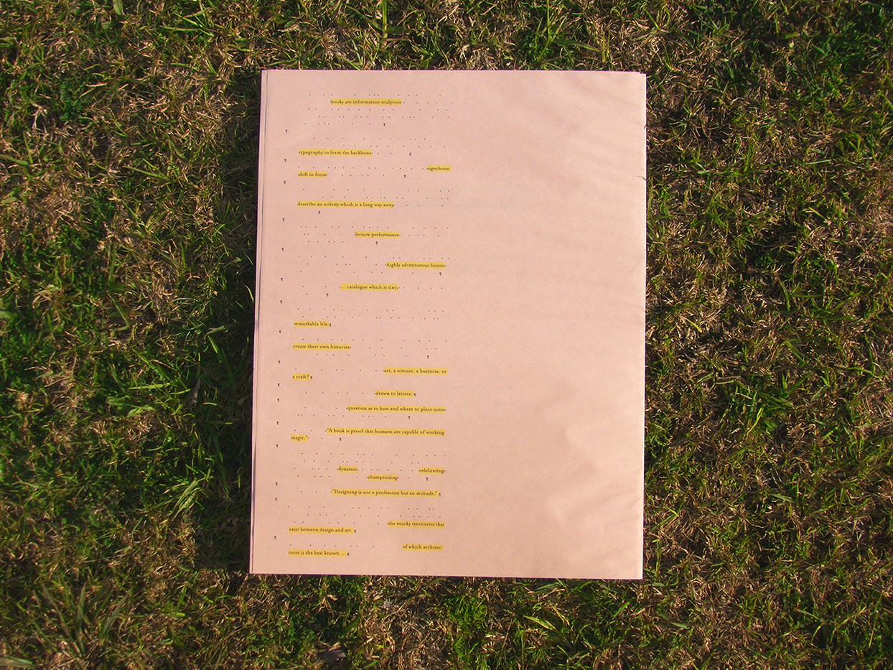

Be Human
This experiment considers how to make the writing/reading of a literature review, a text that is cold and rigidly academic, an experience that is warmer and more engaging. It does so by highlighting the conversational aspects of literature reviews, the voices referenced in the writing and the involvement of the reader.




